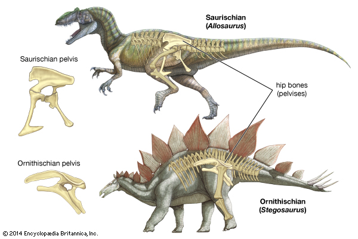

Dinosaurs are a group of reptiles that dominated the land for over 140 million years (more than 160 million years in some parts of the world). One of the reasons for dinosaurs' success is that they had straight back legs, perpendicular to their bodies. This allowed them to use less energy to move than other reptiles that had a sprawling stance like today's lizards and crocodiles. With their legs positioned under their bodies rather than sticking out to the side, dinosaurs' weight was also better supported.
The world of dinosaurs can be tricky to navigate; these famous creatures roamed our planet for approximately 165 million years and were just as diverse as modern-day mammals. Luckily, at the end of the nineteenth century Englishman H. G. Seeley provided a way to condense and categorise this large variety. Seeley noted that dinosaurs’ hips do not lie and provided a starting point towards organising these diverse creatures, a way which is still used to differentiate them today! According to this method of classification, dinosaurs could fit into one of two types of hip structures: the bird-hipped (Ornithischia) or the lizard hipped (Saurischia). Hip structure is a significant feature for palaeontologists because dino-hip structure provides a glimpse into how dinosaurs move and eat. 